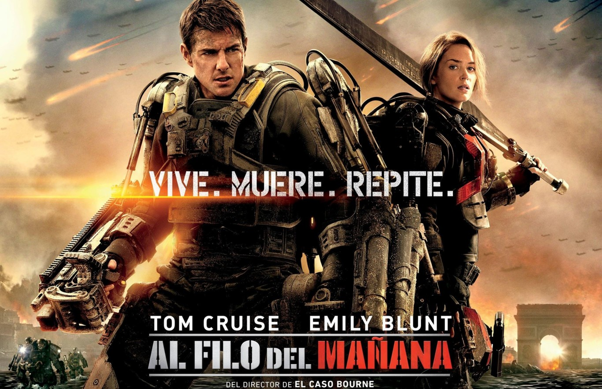
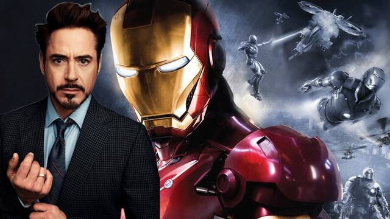
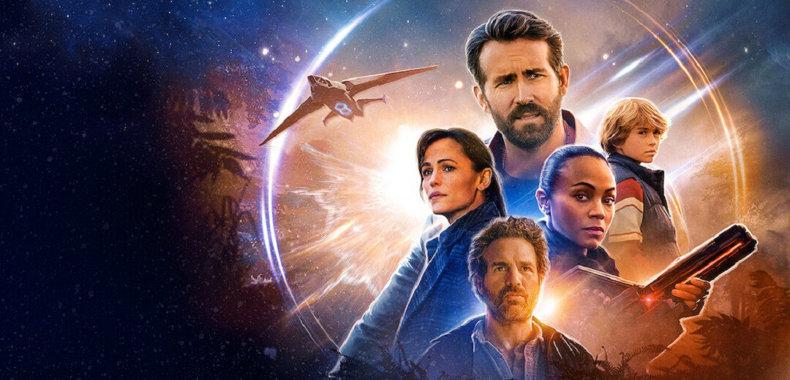
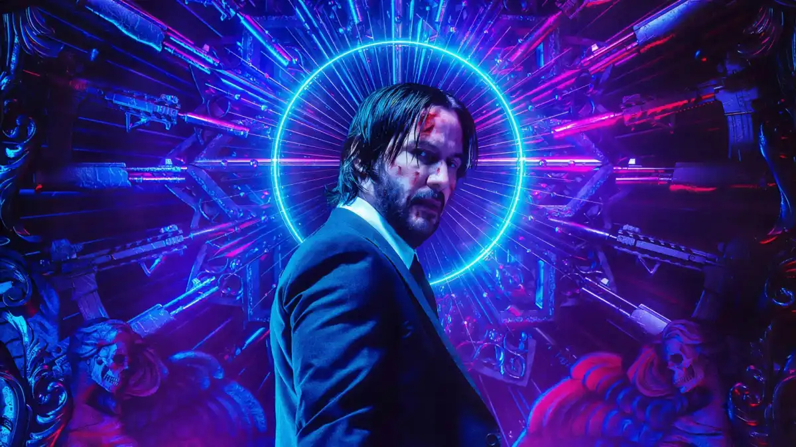
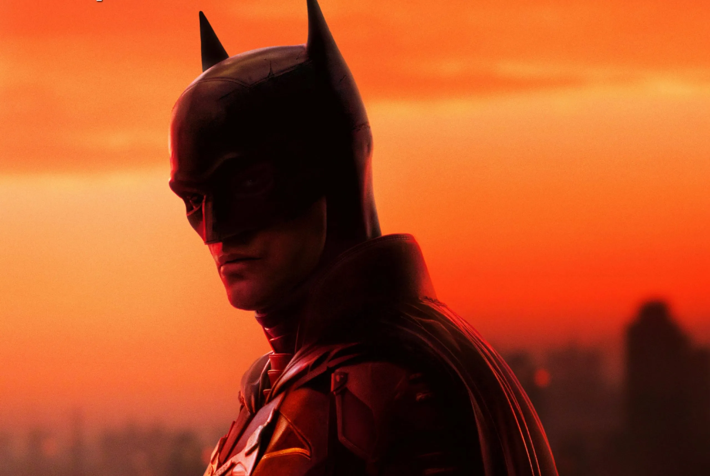
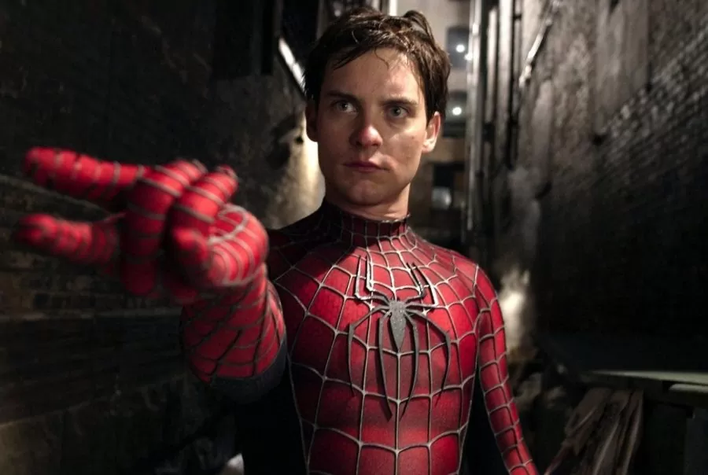
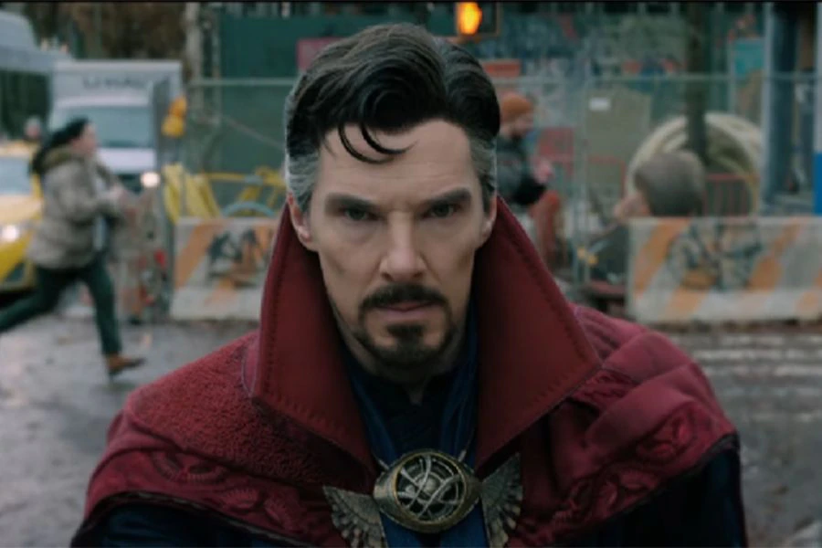

Al filo del mañana
 Accion, Ciencia Ficcion, AventuraLa historia se desarrolla en un futuro cercano en el que una raza alienígena tipo colmena, llamada Mimics, ha llegado a la Tierra realizando continuas agresiones, reduciendo a escombros grandes ciudades y dejando millones de víctimas humanas a su paso. Ningún ejército del mundo puede hacer frente a la velocidad, brutalidad o clarividencia de los militarizados combatientes Mimic o de sus telepáticos comandantes. Pero ahora los ejércitos del mundo han unido sus fuerzas para realizar una ofensiva de largo alcance contra las hordas alienígenas, sin que haya una segunda oportunidad.
Iron man - El hombre de hierro
 Accion, Ciencia Ficcion, Aventura, Marvel ComicsEl multimillonario fabricante de armas Tony Stark (Robert Downey Jr.) debe enfrentarse a su turbio pasado después de sufrir un accidente con una de sus armas. Equipado con una armadura de última generación tecnológica, se convierte en "El hombre de hierro", un héroe que se dedica a combatir el mal en todo el mundo.
El Proyecto Adam
 Comedia, Ciencia Ficcion, AventuraAdam Reed es un piloto de caza que viaja en el tiempo. Cuando se estrella en el año 2022, conoce a su yo de 12 años y juntos emprenden una misión para salvar el futuro.
John Wick (Otro día para matar)
 Accion, SuspensoJohn Wick es un antiguo asesino a sueldo de Nueva York que se había retirado de la profesión después de perder a su esposa. Pero, al descubrir la oscura trama que la mafia había planeado para acabar con él, arrebatándole lo que más quería, volverá a introducirse en el negocio, esta vez por su cuenta, para vengarse.
The Batman
 Accion, Drama, Crimen, DC ComicsCuando un asesino se dirige a la élite de Gotham con una serie de maquinaciones sádicas, un rastro de pistas crípticas envía Batman a una investigación en los bajos fondos. A medida que las pruebas comienzan a acercarse a su casa y se hace evidente la magnitud de los planes del autor, Batman debe forjar nuevas relaciones, desenmascarar al culpable y hacer justicia al abuso de poder y la corrupción que durante mucho tiempo han asolado Gotham City.
Joker
Drama, Suspenso, Crimen, DC ComicsArthur Fleck es un hombre ignorado por la sociedad, cuya motivación en la vida es hacer reír. Pero una serie de trágicos acontecimientos le llevarán a ver el mundo de otra forma. Película basada en Joker, el popular personaje de DC Comics y archivillano de Batman, pero que en este film toma un cariz más realista y oscuro.
Spider-Man
 Accion, Fantasia, Marvel ComicsPeter Parker es un joven y tímido estudiante que vive con su tía May y su tío Ben desde la muerte de sus padres. Un día es mordido por una araña que ha sido modificada genéticamente, descubriendo al día siguiente que posee unos poderes poco habituales: tiene la fuerza y agilidad de una araña.
Doctor Strange
 Accion, Ciencia Ficcion, Aventura, Fantasia, Marvel ComicsLa vida del Dr. Stephen Strange cambia para siempre tras un accidente automovilístico que le deja muy malheridas sus manos. Cuando la medicina tradicional falla, se ve obligado a buscar esperanza y una cura en un lugar impensable: una comunidad aislada en Nepal llamada Kamar-Taj. Rápidamente descubre que éste no es sólo un centro de recuperación, sino también la primera línea de una batalla en contra de fuerzas oscuras y ocultas empeñadas en destruir nuestra realidad. En poco tiempo, Strange, armado con sus poderes mágicos recientemente adquiridos, se ve obligado a elegir entre volver a su antigua vida de riqueza y prestigio o dejarlo todo, para defender el mundo como el mago más poderoso del planeta.
Terminator: Destino oscuro
Accion, Ciencia Ficcion, AventuraSarah Connor une todas sus fuerzas con una mujer cyborg para proteger a una joven de un extremadamente poderoso y nuevo Terminator.
Hulk
Accion, Ciencia Ficcion, Marvel ComicsBruce Banner un brillante investigador en el campo de la tecnología genética, oculta un pasado doloroso que lo ha dejado estigmatizado. Su antigua novia, la investigadora Betty Ross (Jennifer Connelly), que perdió la paciencia esperando que recuperara la estabilidad emocional, fue testigo de un grave accidente sufrido por Banner en el laboratorio: debido a una explosión el cuerpo del científico absorbió una dosis letal de rayos gamma; desde entonces, Banner empezó a sentir en su interior la presencia de un ente peligroso y, a la vez, oscuramente atractivo. Mientras tanto, Hulk, una criatura salvaje y prodigiosamente fuerte aparece esporádicamente, dejando tras de sí una estela de destrucción. Se trata de una situación de emergencia que exige la intervención del ejército, encabezado por el padre de Betty, el general "Thunderbolt" Ross. Betty es la única que sospecha que Bruce tiene algo que ver con Hulk.